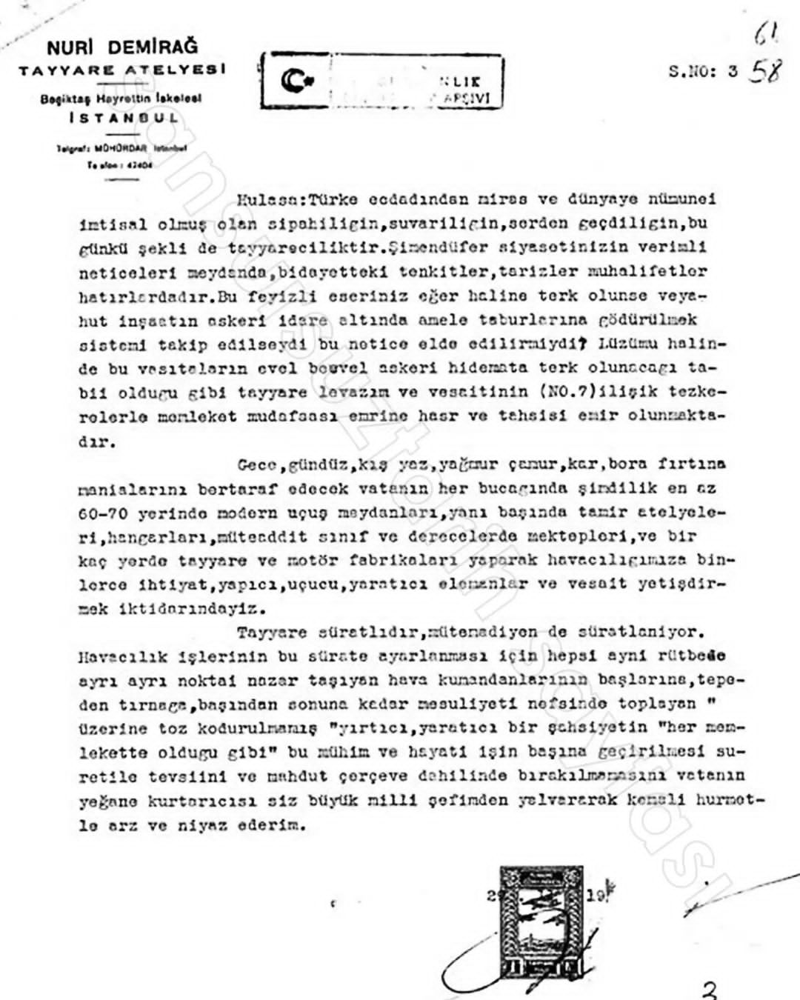

Yerli ve Milli Uçak atılımımızın baş mimarı Demirağ türlü türlü engellemelere takılmıştı. Öyle ki gösteri alanında uçuş yaparken bir pilotun hatasıyla yerde oluşan çukura Nuri Demirağ'ın yaptığı bir uçak hafif bir iniş yapmış ufak bir kaza geçirmişti bu olayı bahane eden İnönü hükümeti Nuri demirağ'dan uçak almayı ve satmasını engellemişti çeşitli engellemelere maruz kalan Demirağın uçak fabrikası kapatılmış tekrar bir fabrika açılması için İsmet İnönü'ye adeta yalvarmıştı İşte o mektubun belgeleri ve Nuri Demirağ'ın kızının sözleri İsmet İnönü'nün Amerikan hayranlığı belgelerle


İngiliz uçaklarını izlerken içiniz rahatmıydı?
Dün Nuri Demirdağ'ı ortadan kaldıranların bugün hedefinde
Selçuk Bayraktar var.